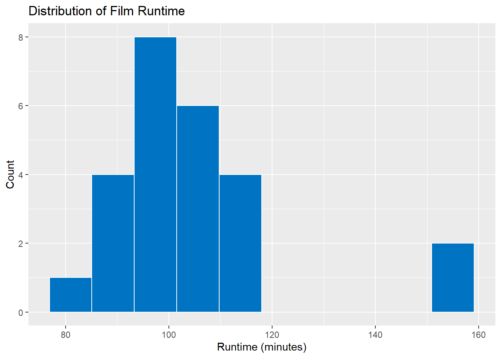
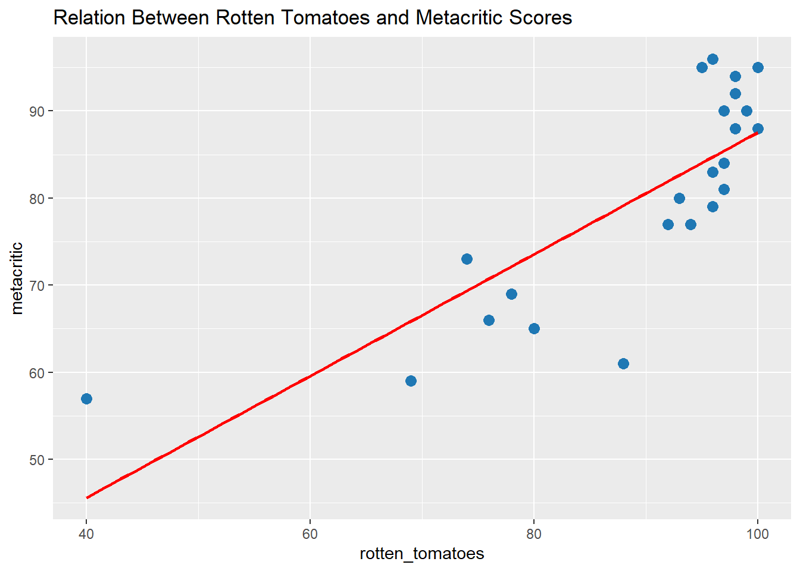
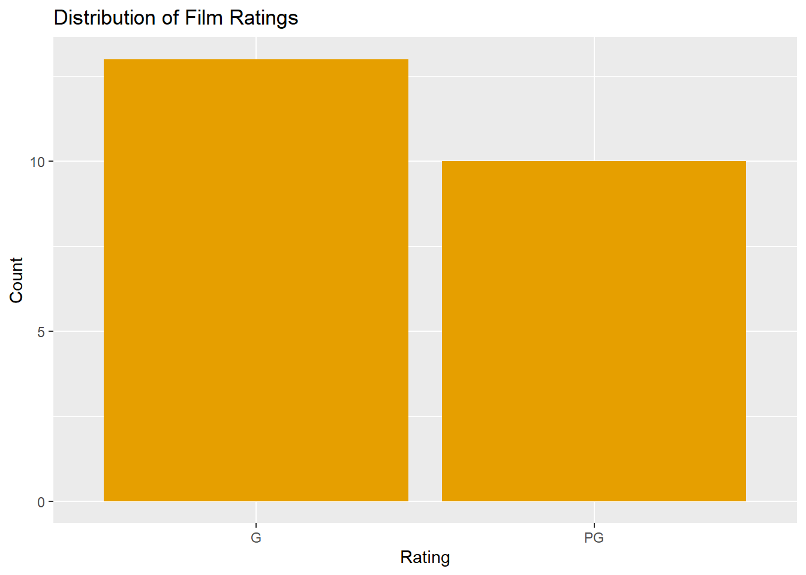
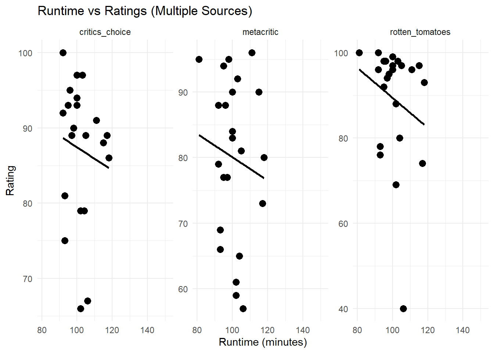
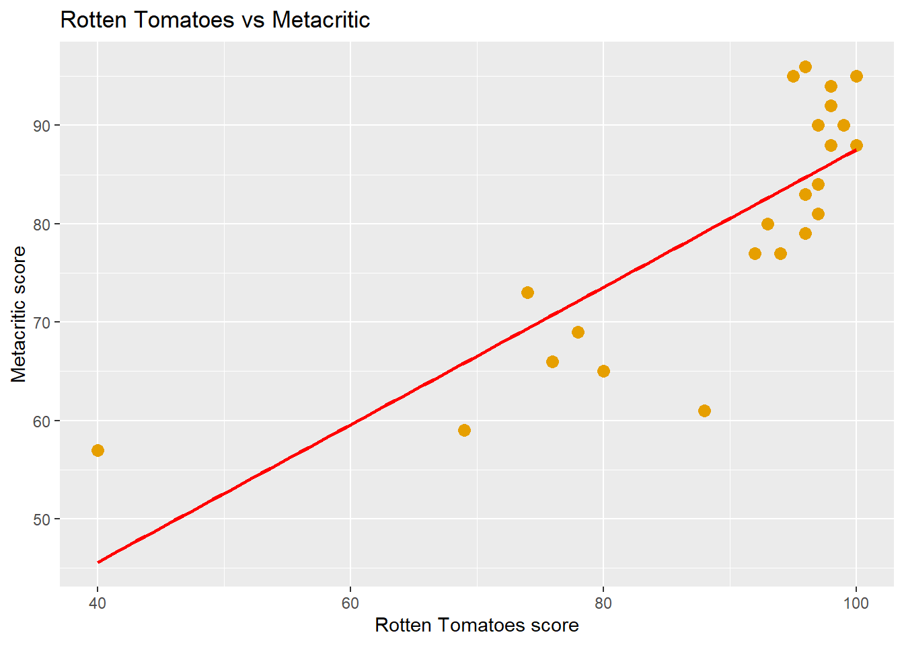

TidyTuesday 2025-03-11 - Pixar films
Vikár Míra
In this project, I examine data from Pixar films.
My goal is to explore data patterns (EDA) and then build, compare, and
evaluate at least two models.
The data analysis is fully reproducible, and all code is available in
Rmd.
Load packages
# Importing the Pixar dataset directly from GitHub
pixar_films <- readr::read_csv(
"https://raw.githubusercontent.com/rfordatascience/tidytuesday/main/data/2025/2025-03-11/pixar_films.csv"
)
public_response <- readr::read_csv(
"https://raw.githubusercontent.com/rfordatascience/tidytuesday/main/data/2025/2025-03-11/public_response.csv"
)Pixar dataset head and glimpse
head(pixar_films)head(public_response)knitr::kable(head(pixar_films))| number | film | release_date | run_time | film_rating |
|---|---|---|---|---|
| 1 | Toy Story | 1995-11-22 | 81 | G |
| 2 | A Bug’s Life | 1998-11-25 | 95 | G |
| 3 | Toy Story 2 | 1999-11-24 | 92 | G |
| 4 | Monsters, Inc. | 2001-11-02 | 92 | G |
| 5 | Finding Nemo | 2003-05-30 | 100 | G |
| 6 | The Incredibles | 2004-11-05 | 115 | PG |
knitr::kable(head(public_response))| film | rotten_tomatoes | metacritic | cinema_score | critics_choice |
|---|---|---|---|---|
| Toy Story | 100 | 95 | A | NA |
| A Bug’s Life | 92 | 77 | A | NA |
| Toy Story 2 | 100 | 88 | A+ | 100 |
| Monsters, Inc. | 96 | 79 | A+ | 92 |
| Finding Nemo | 99 | 90 | A+ | 97 |
| The Incredibles | 97 | 90 | A+ | 88 |
glimpse(pixar_films)## Rows: 27
## Columns: 5
## $ number <dbl> 1, 2, 3, 4, 5, 6, 7, 8, 9, 10, 11, 12, 13, 14, 15, 16, 17, 18, 19, 2…
## $ film <chr> "Toy Story", "A Bug's Life", "Toy Story 2", "Monsters, Inc.", "Findi…
## $ release_date <date> 1995-11-22, 1998-11-25, 1999-11-24, 2001-11-02, 2003-05-30, 2004-11…
## $ run_time <dbl> 81, 95, 92, 92, 100, 115, 117, 111, 98, 96, 103, 106, 93, 104, 95, 9…
## $ film_rating <chr> "G", "G", "G", "G", "G", "PG", "G", "G", "G", "PG", "G", "G", "PG", …glimpse(public_response)## Rows: 24
## Columns: 5
## $ film <chr> "Toy Story", "A Bug's Life", "Toy Story 2", "Monsters, Inc.", "Fi…
## $ rotten_tomatoes <dbl> 100, 92, 100, 96, 99, 97, 74, 96, 95, 98, 98, 40, 78, 80, 98, 76,…
## $ metacritic <dbl> 95, 77, 88, 79, 90, 90, 73, 96, 95, 88, 92, 57, 69, 65, 94, 66, 7…
## $ cinema_score <chr> "A", "A", "A+", "A+", "A+", "A+", "A", "A", "A", "A+", "A", "A-",…
## $ critics_choice <dbl> NA, NA, 100, 92, 97, 88, 89, 91, 90, 95, 97, 67, 81, 79, 93, 75, …1. Data cleaning
#Examining variable types and missing data
glimpse(pixar_films)## Rows: 27
## Columns: 5
## $ number <dbl> 1, 2, 3, 4, 5, 6, 7, 8, 9, 10, 11, 12, 13, 14, 15, 16, 17, 18, 19, 2…
## $ film <chr> "Toy Story", "A Bug's Life", "Toy Story 2", "Monsters, Inc.", "Findi…
## $ release_date <date> 1995-11-22, 1998-11-25, 1999-11-24, 2001-11-02, 2003-05-30, 2004-11…
## $ run_time <dbl> 81, 95, 92, 92, 100, 115, 117, 111, 98, 96, 103, 106, 93, 104, 95, 9…
## $ film_rating <chr> "G", "G", "G", "G", "G", "PG", "G", "G", "G", "PG", "G", "G", "PG", …summary(pixar_films)## number film release_date run_time film_rating
## Min. : 1.0 Length:27 Min. :1995-11-22 Min. : 81.0 Length:27
## 1st Qu.: 7.5 Class :character 1st Qu.:2006-12-18 1st Qu.: 95.0 Class :character
## Median :14.0 Mode :character Median :2013-06-21 Median :100.0 Mode :character
## Mean :14.0 Mean :2012-06-15 Mean :104.8
## 3rd Qu.:20.5 3rd Qu.:2018-12-17 3rd Qu.:106.0
## Max. :27.0 Max. :2023-06-16 Max. :155.0
## NA's :2glimpse(public_response)## Rows: 24
## Columns: 5
## $ film <chr> "Toy Story", "A Bug's Life", "Toy Story 2", "Monsters, Inc.", "Fi…
## $ rotten_tomatoes <dbl> 100, 92, 100, 96, 99, 97, 74, 96, 95, 98, 98, 40, 78, 80, 98, 76,…
## $ metacritic <dbl> 95, 77, 88, 79, 90, 90, 73, 96, 95, 88, 92, 57, 69, 65, 94, 66, 7…
## $ cinema_score <chr> "A", "A", "A+", "A+", "A+", "A+", "A", "A", "A", "A+", "A", "A-",…
## $ critics_choice <dbl> NA, NA, 100, 92, 97, 88, 89, 91, 90, 95, 97, 67, 81, 79, 93, 75, …summary(public_response)## film rotten_tomatoes metacritic cinema_score critics_choice
## Length:24 Min. : 40.00 Min. :57.00 Length:24 Min. : 66.00
## Class :character 1st Qu.: 84.00 1st Qu.:71.00 Class :character 1st Qu.: 81.00
## Mode :character Median : 96.00 Median :81.00 Mode :character Median : 89.00
## Mean : 89.17 Mean :79.96 Mean : 87.14
## 3rd Qu.: 97.50 3rd Qu.:90.00 3rd Qu.: 93.00
## Max. :100.00 Max. :96.00 Max. :100.00
## NA's :1 NA's :1 NA's :3Exemination of missing values
public_response %>%
filter(is.na(critics_choice) | is.na(rotten_tomatoes))Data Overview and Initial Cleaning Steps Before starting the analysis, I examined the dataset to understand its structure and identify potential data quality issues. The dataset contains 24 Pixar films and includes the following variables:
film (character) – The title of the movie.
rotten_tomatoes (numeric) – Percentage score from Rotten Tomatoes.
metacritic (numeric) – Metacritic critic score (0–100).
cinema_score (character) – Audience grade (A, A+, etc.).
critics_choice (numeric) – Critics’ Choice rating (0–100).
Summary of Key Findings A first look using glimpse() and summary() revealed the following:
All variables were loaded correctly with the expected data types.
cinema_score is stored as a character variable, not numeric, because it contains letter-based grades (e.g., A, A+).
Some variables include missing values (NA):
critics_choice: 3 missing values
metacritic: 1 missing value
cinema_score: 1 missing value
I also inspected rows containing missing data. These came exclusively from the film “Luca” and two early films where Critics Choice ratings were not available.
Next Step: Data Cleaning Plan Since the dataset is small and missing values are minimal, carefully handling NAs is important.
Handling Missing Data
Before proceeding with the exploratory data analysis (EDA), it is essential to examine the dataset for missing values. Missing data can influence summary statistics, distort visualisations, and potentially introduce bias during model building. Therefore, identifying and addressing these values is a necessary first step.
Treatment Strategy Because the missingness is low in proportion and the affected variables serve different analytical purposes, we apply the following approach:
cinema_score: We convert this variable into an ordered factor with levels A- < A < A+. The single missing value is left as NA, as imputing an ordered rating would introduce artificial information.
Convert cinema_score to an ordered factor
public_response <- public_response %>%
mutate(
cinema_score = factor(
cinema_score,
levels = c("A-", "A", "A+"),
ordered = TRUE
)
)critics_choice: Since this is a numerical rating derived from awards evaluation, imputing a synthetic score would not be justified. These values are therefore retained as NA and will be handled appropriately during later modelling (e.g., filtering out incomplete rows or using models that support missingness).
Verification After these transformations, we confirm that the missing values remain only in the intended variables:
#Checking the type of variable
str(public_response$cinema_score)## Ord.factor w/ 3 levels "A-"<"A"<"A+": 2 2 3 3 3 3 2 2 2 3 ...#Checking values and sequences
levels(public_response$cinema_score)## [1] "A-" "A" "A+"Check missing values again
public_response %>% summarise(across(everything(), ~ sum(is.na(.))))This ensures that the dataset is clean, consistent, and properly structured for the next steps in the analysis.
2. Exploratory Data Analysis (EDA)
- legalább két ember számára érthető, jól feliratozott plot
- rövid értelmezés a grafikák alatt
- táblázatok és statisztikák
###2.1 Examination of Rotten Tomatoes distribution
public_response %>%
ggplot(aes(x = rotten_tomatoes)) +
geom_histogram(binwidth = 5, fill = "#69b3a2") +
labs(title = "Distribution of Rotten Tomatoes Scores",
x = "Rotten Tomatoes",
y = "Count") Exploratory Data Analysis – Rotten Tomatoes Distribution (Rewritten) The distribution of Rotten Tomatoes scores shows a clear right skew, indicating that most films receive relatively high ratings while lower scores are less common. Visual inspection suggests three noticeable clusters:
a small group around 40 points,
a medium‑sized cluster between 68 and 82 points, and
a prominent concentration between 87 and 100 points.
These clusters imply that the rating system, which ranges from 0 to 100, tends to group films into distinct quality tiers, with the majority achieving comparatively strong critical evaluations.
2.2 Rotten Tomatoes vs Metacritic scatterplot
Goal: to show how closely critics’ scores correlate.
ggplot(public_response, aes(rotten_tomatoes, metacritic)) +
geom_point(color = "#1f78b4", size = 3) +
geom_smooth(method = "lm", se = FALSE, color = "red") +
labs(title = "Relation Between Rotten Tomatoes and Metacritic Scores")
2.3 Pearson correlation and significance test
cor_test_result <- cor.test(
public_response$rotten_tomatoes,
public_response$metacritic,
method = "pearson"
)
cor_test_result##
## Pearson's product-moment correlation
##
## data: public_response$rotten_tomatoes and public_response$metacritic
## t = 6.1679, df = 21, p-value = 4.048e-06
## alternative hypothesis: true correlation is not equal to 0
## 95 percent confidence interval:
## 0.5835946 0.9128600
## sample estimates:
## cor
## 0.8027001Correlation Between Rotten Tomatoes and Metacritic Scores A scatterplot was used to explore the association between Rotten Tomatoes scores and Metacritic ratings. Visual inspection suggested a clear positive relationship: films with lower Rotten Tomatoes scores (around 40–70) tend to receive relatively modest Metacritic ratings, while films scoring above 90 on Rotten Tomatoes cluster between roughly 76 and 92 on Metacritic. This pattern indicates increasing agreement between the two rating systems as film quality rises.
To quantify this relationship, a Pearson product–moment correlation was calculated. The results revealed a strong, positive, and statistically significant correlation between Rotten Tomatoes and Metacritic scores (r = 0.80, t(21) = 6.17, p < 0.001). The 95% confidence interval [0.58, 0.91] further supports the conclusion that the association is reliably above zero.
Overall, the analysis suggests that the two critic-based rating platforms provide largely consistent evaluations of film quality.
2.4 Distribution of run_time
ggplot(pixar_films, aes(x = run_time)) +
geom_histogram(fill = "#0073C2FF", color = "white", bins = 10) +
labs(title = "Distribution of Film Runtime",
x = "Runtime (minutes)", y = "Count")
2.5 Basic descriptive statistics for the length of the film
summary_stats <- pixar_films %>%
summarise(
mean_run_time = mean(run_time, na.rm = TRUE),
median_run_time = median(run_time, na.rm = TRUE),
sd_run_time = sd(run_time, na.rm = TRUE),
min_run_time = min(run_time, na.rm = TRUE),
max_run_time = max(run_time, na.rm = TRUE)
)
summary_statsThe distribution of film run times is approximately normal, with most movies lasting between 80 and 120 minutes. The mean run time is 104.8 minutes (median = 102 minutes, SD = 16.8), indicating that typical Pixar films cluster closely around a roughly 100‑minute length. The minimum run time is 81 minutes, while two substantially longer films extend the range up to 155 minutes. These long outliers create a mild right skew in an otherwise symmetric distribution.
2.5 run_time vs Rotten Tomatoes, Metacritic, Critics Choice
library(dplyr)
library(tidyr)
ratings_long <- public_response %>%
pivot_longer(cols = c(rotten_tomatoes, metacritic, critics_choice),
names_to = "rating_type",
values_to = "rating")
ggplot(ratings_long %>% left_join(pixar_films, by = "film"),
aes(x = run_time, y = rating)) +
geom_point(size = 3) +
geom_smooth(method = "lm", se = FALSE, color = "black") +
facet_wrap(~ rating_type, scales = "free_y") +
labs(
title = "Runtime vs Ratings (Multiple Sources)",
x = "Runtime (minutes)",
y = "Rating"
) +
theme_minimal()
2.6 run_time vs Rotten Tomatoes, Metacritic, Critics Choice Correlations
df <- left_join(pixar_films, public_response, by = "film")
cor.test(df$run_time, df$rotten_tomatoes)##
## Pearson's product-moment correlation
##
## data: df$run_time and df$rotten_tomatoes
## t = -1.0295, df = 21, p-value = 0.315
## alternative hypothesis: true correlation is not equal to 0
## 95 percent confidence interval:
## -0.5790755 0.2121789
## sample estimates:
## cor
## -0.2191941cor.test(df$run_time, df$metacritic)##
## Pearson's product-moment correlation
##
## data: df$run_time and df$metacritic
## t = -0.58647, df = 21, p-value = 0.5638
## alternative hypothesis: true correlation is not equal to 0
## 95 percent confidence interval:
## -0.5123361 0.3010104
## sample estimates:
## cor
## -0.1269424cor.test(df$run_time, df$critics_choice)##
## Pearson's product-moment correlation
##
## data: df$run_time and df$critics_choice
## t = -0.56724, df = 19, p-value = 0.5772
## alternative hypothesis: true correlation is not equal to 0
## 95 percent confidence interval:
## -0.5311437 0.3204953
## sample estimates:
## cor
## -0.1290454Correlation analyses were conducted to examine the association between film run time and three measures of critical response (Rotten Tomatoes, Metacritic, Critics’ Choice). Across all three comparisons, results indicated no statistically significant relationship. Run time showed a weak, negative, and non-significant correlation with Rotten Tomatoes scores (r = –0.22, p = .315), Metacritic scores (r = –0.13, p = .564), and Critics’ Choice ratings (r = –0.13, p = .577). The confidence intervals for all estimates included zero, suggesting that film length is not meaningfully associated with critical evaluations. These findings also align with the scatterplots, which show no clear linear trend.
2.6 Frequency of film ratings (film_rating)
clean_films <- pixar_films %>%
filter(film_rating %in% c("G", "PG"))
unique(clean_films$film_rating)## [1] "G" "PG" ggplot(clean_films, aes(x = film_rating)) +
geom_bar(fill = "#E69F00") +
labs(title = "Distribution of Film Ratings",
x = "Rating",
y = "Count")
2.7 Frequency of film ratings and its association with running time
#frequency table
table(clean_films$film_rating)##
## G PG
## 13 10#relative frequency
prop.table(table(clean_films$film_rating))##
## G PG
## 0.5652174 0.4347826#Are the running times different between G and PG movies?
wilcox.test(run_time ~ film_rating, data = clean_films)##
## Wilcoxon rank sum test with continuity correction
##
## data: run_time by film_rating
## W = 64, p-value = 0.9752
## alternative hypothesis: true location shift is not equal to 0After filtering the dataset to include only the meaningful MPAA categories (“G” and “PG”), I examined whether film rating is associated with differences in runtime. A Wilcoxon rank-sum test showed no statistically significant difference between the two groups (W = 64, p = 0.975). This indicates that Pixar’s G‑rated and PG‑rated movies do not differ in their typical runtimes. In practice, this suggests that film length is unrelated to the assigned age rating, and Pixar maintains similar durations across both categories.
2.8 Changes in run time (film length) over time
library(lubridate)
pixar_films <- pixar_films %>%
mutate(release_year = year(release_date))model_runtime_year <- lm(run_time ~ release_year, data = pixar_films)
summary(model_runtime_year)##
## Call:
## lm(formula = run_time ~ release_year, data = pixar_films)
##
## Residuals:
## Min 1Q Median 3Q Max
## -16.066 -12.457 -2.910 4.263 37.308
##
## Coefficients:
## Estimate Std. Error t value Pr(>|t|)
## (Intercept) -2063.472 770.323 -2.679 0.01341 *
## release_year 1.078 0.383 2.815 0.00983 **
## ---
## Signif. codes: 0 '***' 0.001 '**' 0.01 '*' 0.05 '.' 0.1 ' ' 1
##
## Residual standard error: 14.78 on 23 degrees of freedom
## (2 observations deleted due to missingness)
## Multiple R-squared: 0.2562, Adjusted R-squared: 0.2239
## F-statistic: 7.923 on 1 and 23 DF, p-value: 0.009829plot(model_runtime_year)


pixar_films %>%
ggplot(aes(x = release_date, y = run_time)) +
geom_point(color = "#0072B2", size = 3) +
geom_smooth(method = "lm", se = TRUE, color = "red") +
labs(
title = "Film length in time",
x = "Date of publication",
y = "Length (minutes)"
)
A simple linear regression was performed to examine whether Pixar film runtimes have changed across release years. The model shows a significant positive relationship between release year and runtime (β = 1.078, p = 0.0098). This means that, on average, Pixar movies have become about 1.1 minutes longer each year.
The model explains approximately 25.6% of the variance in runtimes (R² = 0.256), which indicates a moderate relationship: release year is a meaningful, but not exclusive, predictor of runtime. The residual standard error (14.78 minutes) suggests that runtimes still vary substantially beyond the trend captured by the model.
We should also consider that The scatterplot suggests a very mild upward trend in movie runtimes over time, but the pattern is far from linear. The smoothing curve is wavy, implying that runtimes fluctuate rather than follow a steady increase. Three clear outliers appear at fitted values around 98, 115, and 118 minutes, corresponding to unusually short or long movies compared with their release-year peers. The residuals-vs-fitted plot shows non‑random structure: the loess curve bends several times, indicating model misspecification and suggesting that a linear model does not fit the data well. Additionally, the Q–Q plot shows noticeable deviations from normality at both ends, driven largely by the same outliers identified earlier.
Overall, the results support the conclusion that Pixar movies tend to get longer over time, although year alone does not account for all runtime differences.
2.9 How much does time matter when it comes to movie ratings (G vs. PG)?
# Add release_year
clean_films <- clean_films %>%
mutate(release_year = lubridate::year(release_date))
# Convert rating to binary (PG = 1, G = 0)
clean_films$rating_binary <- ifelse(clean_films$film_rating == "PG", 1, 0)
# Logistic regression: does rating depend on release year?
rating_model <- glm(rating_binary ~ release_year,
data = clean_films,
family = binomial)
summary(rating_model)##
## Call:
## glm(formula = rating_binary ~ release_year, family = binomial,
## data = clean_films)
##
## Coefficients:
## Estimate Std. Error z value Pr(>|z|)
## (Intercept) -405.60171 180.38154 -2.249 0.0245 *
## release_year 0.20155 0.08965 2.248 0.0246 *
## ---
## Signif. codes: 0 '***' 0.001 '**' 0.01 '*' 0.05 '.' 0.1 ' ' 1
##
## (Dispersion parameter for binomial family taken to be 1)
##
## Null deviance: 31.492 on 22 degrees of freedom
## Residual deviance: 23.809 on 21 degrees of freedom
## AIC: 27.809
##
## Number of Fisher Scoring iterations: 4pixar_films %>%
ggplot(aes(x = release_date, fill = film_rating)) +
geom_bar() +
labs(
title = "Movie ratings over time",
x = "Date of publication",
y = "Number of pieces"
) The plot shows how movie ratings have changed over time across the Pixar
dataset. Early releases are almost exclusively rated G, but from the
late 2000s onward PG-rated films appear more frequently, and they
gradually become the dominant category. A few films in the 2020s have
missing or “Not Rated” labels, but these represent isolated cases rather
than a trend.
The plot shows how movie ratings have changed over time across the Pixar
dataset. Early releases are almost exclusively rated G, but from the
late 2000s onward PG-rated films appear more frequently, and they
gradually become the dominant category. A few films in the 2020s have
missing or “Not Rated” labels, but these represent isolated cases rather
than a trend.
To quantify this visually observable shift, I fitted a logistic regression predicting the probability of a movie being PG based on its release year. The model shows a significant positive effect of release year (p = 0.0246), meaning that movies released later are statistically more likely to receive a PG rating.
2.10 Trends in critical reviews over time
public_response2 <- public_response %>%
left_join(pixar_films, by = "film") %>%
mutate(release_year = as.numeric(format(release_date, "%Y")))
rt_model <- lm(rotten_tomatoes ~ release_year, data = public_response2)
summary(rt_model)##
## Call:
## lm(formula = rotten_tomatoes ~ release_year, data = public_response2)
##
## Residuals:
## Min 1Q Median 3Q Max
## -48.825 -5.034 5.364 7.778 11.389
##
## Coefficients:
## Estimate Std. Error t value Pr(>|t|)
## (Intercept) 896.6263 811.9014 1.104 0.282
## release_year -0.4017 0.4039 -0.995 0.331
##
## Residual standard error: 14.16 on 21 degrees of freedom
## (1 observation deleted due to missingness)
## Multiple R-squared: 0.04498, Adjusted R-squared: -0.0004964
## F-statistic: 0.9891 on 1 and 21 DF, p-value: 0.3313public_response %>%
left_join(pixar_films, by = "film") %>%
ggplot(aes(x = release_date, y = rotten_tomatoes)) +
geom_point(color = "#E69F00", size = 3) +
geom_smooth(method = "lm", se = TRUE, color = "red") +
labs(
title = "Rotten Tomatoes score over time",
x = "Date of publication",
y = "RT score"
) The scatterplot shows Rotten Tomatoes scores across release years, together with a fitted linear trend. The distribution of points suggests no strong upward or downward pattern in critical reception over time.
The linear regression model confirms this visually observed result. The slope of the regression line is small and negative (β = –0.40), but not statistically significant (p = 0.33). The model explains almost none of the variance in the scores (adjusted R² ≈ 0). This indicates that release year is not a meaningful predictor of Rotten Tomatoes ratings in this dataset.
Overall, the analysis suggests that Pixar films have maintained relatively stable critical reception over time, without a clear long-term improvement or decline.
3. Modellek építése
- legalább két modell ugyanarra az outcome változóra
- pl. lineáris modell, logisztikus, random forest, stb.
- modell-összehasonlítás
- AIC, RMSE, accuracy stb.
- rövid konklúzió: melyik jobb és miért?
4. Modellek értékelése
- assumption check + residual diagnostics
- pl. QQ plot, residuals vs fitted plot
- értelmezés: mi látszik, rendben vannak-e a feltételek?
5. Következtetések / Report
- összefoglalás emberi nyelven
- mik a tanulságok?
- mit találtál érdekesnek?
6. Kreatív rész (ha szeretnél)
- extra vizualizációk
- extra kérdések
- saját ötletek